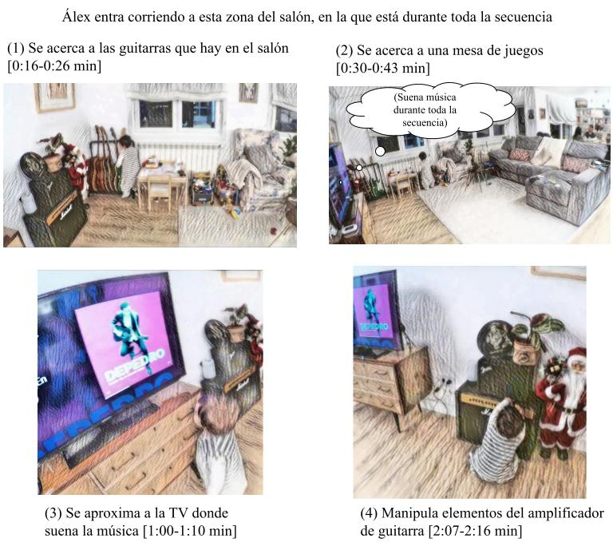
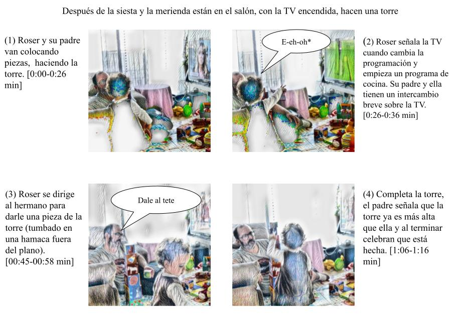
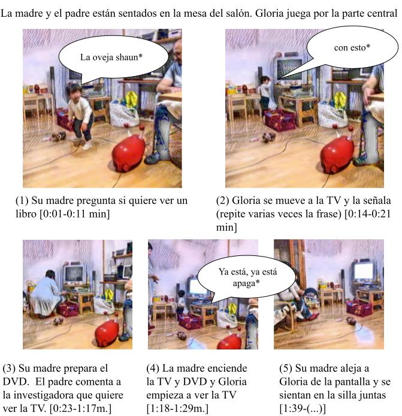
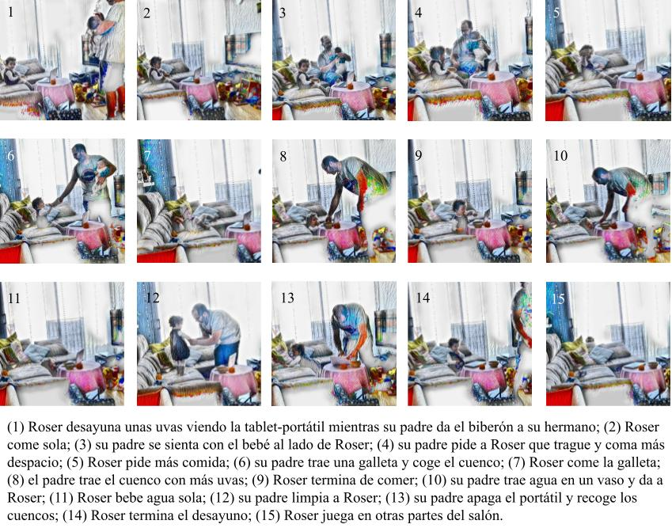
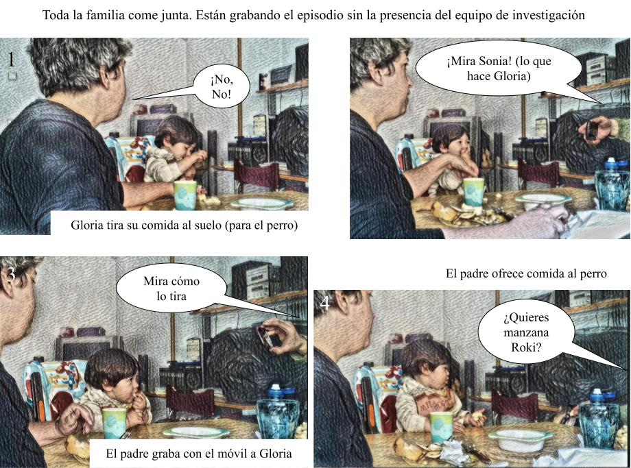
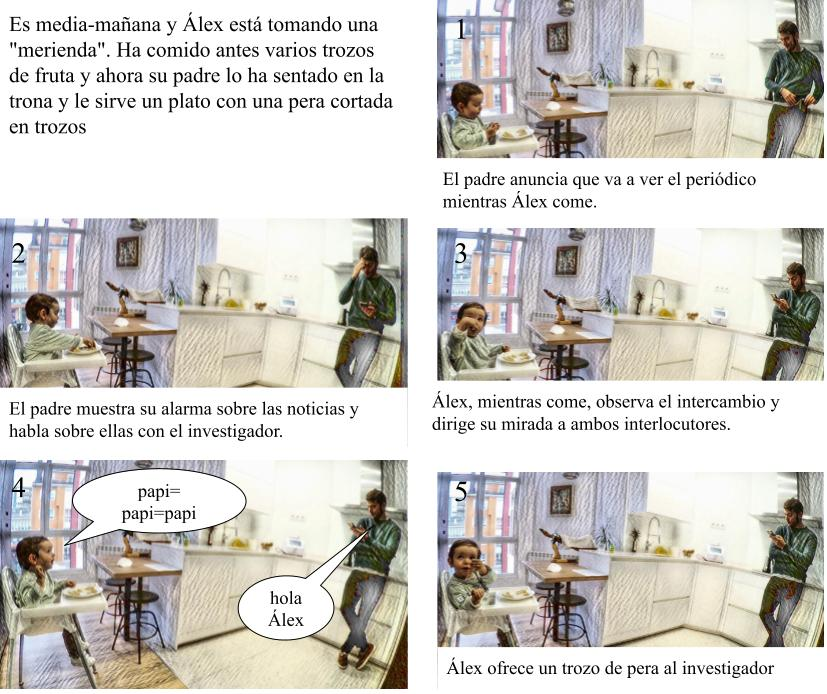

Ensamblajes domésticos, infancia temprana y medios digitales
-
David Poveda
Universidad:
Correo:
orcid
Otra información
- Mitsuko Matsumoto
Universidad:
Correo:
orcid
Otra información
- Cristina Aliagas
Universidad:
Correo:
orcid
Otra información
- Daniel Vázquez
Universidad:
Correo:
orcid
Otra información
Recibido: 18-07-2022; Aceptado: 07-06-2023; Publicado: 13-10-2023
https://doi.org/10.5565/rev/athenea.3344
https://atheneadigital.net/article/download/v23-n3-poveda-matsumoto-aliagas-etal/3344-pdf-es/16284
Resumen
En este artículo introducimos el constructo de ensamblaje doméstico como herramienta conceptual para comprender las prácticas digitales de la primera infancia en el hogar. Nuestra propuesta se nutre de una perspectiva ecológica del desarrollo humano y de los estudios de la ciudad desde la Teoría del Actor-Red. Discutimos el recorrido conceptual de nuestra propuesta, así como las ventajas y limitaciones del concepto a partir de tres casos recogidos dentro del estudio del estado español “Un Día en la Vida Digital de la Infancia 0-3”. Utilizamos los materiales empíricos de esta investigación, que tiene como eje la grabación en vídeo de un día completo de la vida de un niño/a de 0-3 años, para discutir dos recorridos analíticos: partir del dispositivo para reconstruir los ensamblajes domésticos o partir de las rutinas para desentrañar cómo se ensamblan en relación con las tecnologías digitales del hogar.
- Early Childhood
- Assemblage
- Home
- Digital Technology
- Actor-Network Theory
- Eco- Cultural Theory
Introducción
El interés de investigación creciente por el lugar de los medios digitales en la vida y prácticas de socialización de la infancia temprana se ha visto entrecruzado por, al menos, dos giros teórico-metodológicos relevantes para el modo en que se ha constituido esta temática de investigación. Por un lado, una parte significativa de los trabajos en torno a infancia entre 0-8 años, e incluso dentro de la horquilla más temprana de 0-3 años, asume una perspectiva ecológico-sistémica sobre el desarrollo y las formas de vida de la infancia (e. g. Danby et al., 2018; Erstad y Gillen, 2020; Plowman, 2016). Así, el punto de partida de muchos trabajos previos no ha consistido exclusivamente en enumerar los dispositivos digitales a los que tienen acceso niños y niñas, ni se ha centrado en la cuantificación del tiempo de exposición frente a pantallas de la infancia actual —aunque el vocabulario del “tiempo de pantalla” sigue presente en las discusiones en ámbitos como la pediatría, la atención temprana e incluso la educación (e. g. American Academy of Pediatrics, 2016; Fung et al., 2020; Madigan et al., 2019)—. Al contrario, el objetivo de los trabajos previos ha sido comprender el lugar de las tecnologías y medios digitales en las rutinas diarias de la infancia (Poveda et al., 2007; Tudge et al., 2006), las prácticas y experiencias sociales en torno y con medios digitales y la organización espacio-temporal del desarrollo mediado por lo digital (Kumpulainen y Gillen, 2017). Esta orientación tiene implicaciones relevantes desde el punto de vista metodológico, que son especialmente visibles en los estudios recientes sobre niños y niñas más pequeñas. Así, se priorizan investigaciones que otorgan un lugar destacado a la observación en entornos naturales como fuente de información (sea la observación directa/participante o indirecta/colaborativa), incluyendo el uso de diferentes instrumentos (cámaras de vídeo o fotográficas) y/o técnicas de trabajo colaborativo que facilitan la transferencia de la labor de documentación y auto-observación a las propias familias (Aarsand, 2016; Ergler et al., 2016; Poveda, 2020). Igualmente, en estos trabajos se incorporan como estrategia de registro la elaboración de materiales empíricos creativos como mapas del hogar, tours en el hogar registrados con fotografía o vídeo, diario-recorridos digitales o el rastreo directo de la actividad digital (Baird, 2013).
Por otra parte, el dar prioridad analítica a los contextos diarios de actividad, particularmente cuando las temáticas de investigación gravitan hacia medios y tecnologías digitales, ha contribuido a singularizar el hogar y los espacios domésticos como foco de interés (Morgade et al., 2020; Poveda et al., 2012). Sin duda, este interés se nutre de trabajos en diferentes campos (antropología, sociología, geografía de la infancia, etc.) de las últimas décadas preocupados por los espacios más íntimos de la actividad social (Cieraard, 2006; Pink et al., 2017; Valentine, 2008); pero, a la vez, la investigación sobre medios digitales ha contribuido de manera sustancial a las discusiones sobre la noción de hogar (Flewitt y Clark, 2020; Venkatesh, 2006). En particular, la investigación so
bre medios digitales, hogar e infancia-juventud ha abierto la puerta a varias cuestiones sociológicas relevantes y ha participado con diferentes conceptos que han logrado cierto arraigo académico e incluso los debates públicos sobre el tema.
Un constructo que refleja esta trayectoria de enriquecimiento conceptual es el término cultura del dormitorio (bedroom culture) usado para describir un aspecto sociológico de la experiencia juvenil-adolescente. Esta noción se acuñó en la década de 1970 dentro de los estudios culturales de la juventud para comprender una parte de las prácticas expresivas juveniles femeninas (McRobbie y Garber, 1976) —en oposición a las prácticas y culturas masculinas más “públicas”—, pero progresivamente se ha extendido como concepto-metáfora para comprender las experiencias de socialización de la adolescencia contemporánea (Feixa, 2005; Lincoln, 2016). Particularmente, se ha utilizado para enfatizar el lugar de los medios —incluyendo los digitales (Davies, 2004)— y del espacio doméstico en la vida juvenil y adolescente. Sonia Livingstone (2007) sintetiza algunos de los supuestos y elementos que se han consolidado alrededor del concepto de cultura del dormitorio (traducción propia):
“Cultura del dormitorio” — en especial para personas jóvenes, [se trata de] un conjunto de significados convencionales y prácticas muy asociadas con la identidad, la privacidad y el self que han quedado ligadas al dormitorio del menor dentro del espacio doméstico en la sociedades moderno-tardías. (Livingstone, 2007, p. 302)
Sin poner en duda la utilidad del constructo para el ámbito de investigación en el que se ha desarrollado, el concepto de cultura del dormitorio no parece ser un descriptor adecuado para captar las experiencias y prácticas mediáticas y digitales en el hogar de niños y niñas más pequeñas. De entrada, porque la intimidad del dormitorio no suele ser el espacio principal de socialización en el hogar durante la primera infancia (Chaudron, 2015; Chaudron et al., 2018), por lo que, cuando menos, habría que desplazar/sustituir la etiqueta espacial (i. e. hablar de “cultura del salón”, “cultura de la cocina”, etc.). De modo más importante para nosotros, la evidencia empírica disponible sobre medios digitales y niños y niñas más pequeños —incluyendo los datos que presentaremos en este artículo— no parece encajar bien con varios de los supuestos centrales del concepto de cultura del dormitorio encapsulados en la definición anterior. En otras palabras, mover el foco de interés de investigación a las prácticas digitales en el hogar a edades más tempranas no sólo supone un desplazamiento “físico” en los espacios domésticos que emergen como relevantes, sino que puede ser una oportunidad para abordar desde parámetros conceptuales diferentes las experiencias digitales de la infancia durante sus primeros años de vida.
Este artículo trabaja en esta dirección y propone profundizar en la idea de ensamblaje doméstico (o ensamblaje de salón) como constructo que permite documentar y examinar de manera más precisa y holística las prácticas y experiencias digitales infantiles (e. g. Poveda et al., 2020). Esta aproximación permite examinar dinámicas que quedan potencialmente oscurecidas en el doble anclaje en una noción de “cultura” como sistema de convenciones y “dormitorio” como espacio de intimidad e identidad que contiene la noción de “cultura del dormitorio”. El concepto de ensamblaje que adoptamos tiene su origen en el concepto de ensamblaje urbano (Farías, 2011; Farías y Bender, 2010) desarrollado para examinar la ciudad a través de la Teoría del Actor-Red (TAR) (Latour, 2005). Desde el marco de los ensamblajes urbanos, la ciudad y el entorno urbano se entienden como asociaciones emergentes inacabadas y cambiantes entre diferentes clases de elementos (edificios, personas, servicios, infraestructuras, tecnologías, elementos culturales, elementos físicos: vegetación, clima, orografía, etc.) que posibilitan y actualizan la acción de sus habitantes (ver también Gómez, 2019).
Muchas de estas premisas ligadas al concepto de ensamblaje urbano se pueden aplicar al hogar/espacio doméstico como punto de partida, aunque la idea misma de de-escalar un constructo creado para la ciudad al hábitat del hogar (cf. Ochs et al., 2005) no encaje fácilmente con la ontología plana de la TAR (Latour, 2005). Podemos entender la actividad de la infancia en el hogar como constituida por y constituyente de ensamblajes domésticos. Así, las prácticas digitales infantiles en el hogar están organizadas por los diferentes elementos que configuran la experiencia doméstica e incluyen aspectos tales como la arquitectura, mobiliario y diseño del hogar, los artefactos (materiales, sonoros, lumínicos) presentes en este contexto, las tecnologías (digitales y no digitales) disponibles y accesibles en el hogar y los diversos actores sociales humanos y no humanos (como mascotas). Pensar en las prácticas digitales como ensamblajes también implica poner en primer plano algunos elementos en el análisis y, por tanto, asumir que estos ensamblajes digitales del hogar co-ocurren con otras actividades (i. e. ensamblajes) y se insertan en la organización más amplia de las rutinas infantiles y el orden espacio-temporal del hogar que han co-construído sus habitantes. Del mismo modo, esta orientación invita a adoptar una mirada multimodal y sensorial a las prácticas digitales y ensamblajes domésticos (Alper, 2018; Marsh, 2020; Pink et al., 2017) que incluye el total de los sistemas semióticos implicados en la actividad digital de los niños y las niñas más pequeñas y el conjunto de experiencias sensoriales (hápticas, sonoras, lumínicas, olfativas, táctiles, etc.) que componen la relación con el entorno doméstico. Finalmente, debe señalarse que entendemos que la idea de ensamblaje doméstico es compatible con una perspectiva ecológica sobre el desarrollo humano y la actividad infantil inspirada en el modelo clásico de Urie Bronfenbrenner (Navarro y Tudge, 2022) y puede tener relación con otros constructos recientes que contribuyen a la comprensión del lugar de lo digital en la primera infancia, como la noción de cluster (Arnott, 2016) o la línea de estudio específica sobre las prácticas digitales desde la mediación parental (e. g. Scott, 2022). Pero a su vez implica subrayar algunas cuestiones que desde estas propuestas no quedan del todo articuladas. En concreto, un ensamblaje es un sistema complejo que no está necesariamente ni exclusivamente anclado en actores sociales (i. e. agentes humanos) (cf. Neal y Neal, 2013), lo que permite, dentro de la lógica de la TAR, ir “más allá de lo humano” (Hackett y Sommerville, 2017) a la hora de comprender las prácticas y experiencias infantiles digitales.
En resumen, el objetivo de este artículo es mostrar algunas de las posibilidades del concepto de ensamblaje doméstico para avanzar nuestra comprensión del lugar de los medios digitales en las prácticas y formas de socialización de la primera infancia. Examinamos los datos obtenidos dentro de un estudio más amplio sobre la vida digital de los niños y las niñas entre 0-3 años de edad para mostrar algunos de los recorridos analíticos que ofrece el pensar en las prácticas digitales infantiles como ensamblajes. Terminamos planteando algunos de los retos y líneas de trabajo para posibles futuras investigaciones sobre este concepto.
Metodología
Procedimiento
Los datos de este artículo provienen del estudio más amplio comparativo europeo (ver nota final) —y una extensión posterior— centrado en las experiencias digitales de la infancia durante los primeros tres años de vida. Este proyecto parte de una variación del diseño de investigación “un día en la vida” (A day in the life) (Gillen y Cameron, 2010) desarrollado para investigar desde una perspectiva ecológica y observacional el desarrollo temprano. Esta aproximación tiene como eje vertebral la documentación detallada en vídeo de la actividad cotidiana del niño o niña focal participante e implica tres visitas, cada una con una función específica.
(1) Visita piloto al hogar: Tras contactar con las familias por diferentes medios se acuerda una primera visita al hogar donde se explica más detenidamente la investigación y los principios éticos que la rigen, lo que permite que la familia y el menor focal se familiaricen con los/as investigadores/as y los instrumentos de investigación (cámaras de vídeo, libretas de registro, etc.). En esta primera visita se firman los consentimientos de participación, se recoge información sociodemográfica sobre la familia, se realiza un inventario de los dispositivos/medios digitales disponibles en el hogar y se hace un mapa-tour de la vivienda. Finalmente, se realiza una grabación piloto de aproximadamente 30-60 minutos para que todos los miembros del hogar puedan experimentar con el procedimiento de grabación y lo que suele implicar.
(2) Grabación de un día en la vida del niño/a: Acordada la implicación en el estudio se realiza una segunda visita en la que se graba en vídeo de forma continuada la actividad cotidiana del niño/a focal y las personas con las que interactúa a lo largo de unas 6 horas. Para evitar problemas éticos y administrativos, en el caso español se eligieron días para la grabación en las que el/la niño/a no asistía a la escuela infantil —si estaba escolarizado—, pero sí se registraron las salidas fuera del hogar realizadas durante el día de la grabación (paseos por la calle, recados, salidas al parque, etc.) o visitas al hogar de otros miembros de la red familiar. Durante el día de la grabación se respetan las horas de sueño del participante y cualquier otro momento privado de la familia que prefieran que no se documente (por ejemplo, baños o uso del servicio). El objetivo es lograr un registro de al menos seis horas de grabación durante el día.
(3) Entrevista iterativa-reflexiva con los progenitores: Con posterioridad a la grabación, el equipo de investigación revisa las grabaciones a la luz de los objetivos y preguntas iniciales del estudio (en este caso, episodios en los que los medios/tecnologías digitales ocupan algún lugar) y prepara una compilación de unos 5-6 episodios variados y relevantes con una duración máxima de 30 minutos. Este vídeo-relato representativo de patrones observados sirve para articular una entrevista más amplía con los padres (o con al menos la persona principal presente en la grabación, pero también con la madre y el padre si así lo deciden). En esta entrevista se co-visionan los segmentos seleccionados (cf. Erickson, 2006) y comentan los aspectos destacados por los padres. La devolución de la observación en forma de una entrevista-espejo hace que algunos padres tomen conciencia de ciertas acciones en relación con la mediación tecnológica, lo que puede llevar a visibilizar puntos de tensión o contradicción. Así, durante esa entrevista se exploran creencias y estrategias de socialización más generales en la familia y, en este caso en particular, sobre infancia, desarrollo y tecnologías digitales.
Participantes
La muestra original de familias del estado español está compuesta por dos niñas, Gloria y Roser, y sus familias. La recogida de datos para estos dos casos se realizó entre noviembre y diciembre de 2017. A esta muestra se incorporó un tercer caso, Álex y su familia, cuyas grabaciones y entrevistas se realizaron entre diciembre de 2021 y enero de 2022.
Gloria (Madrid, noviembre de 2017)
Gloria es una niña de 21 meses en el momento de la grabación que vive con su madre (39), padre (41) y un perro mascota en un piso de tres habitaciones en una zona residencial de una localidad del este del área metropolitana de Madrid. La madre es administrativa en una empresa de medios digitales y el padre es profesor de educación secundaria, aunque en el momento del estudio se encuentra en paro y dedicado a tiempo completo al cuidado de la hija. En el hogar hablan a Gloria en castellano e italiano, la segunda lengua de la madre.
Gloria atiende una escuela infantil sólo durante algunas horas al día entre semana. La grabación completa de su día se realizó en fin de semana desde el momento del desayuno (10:30h) hasta las 19:10h cuando Gloria volvió a jugar después de hacer un pastelito con su mamá, e incluye a su madre y a su padre a lo largo de todo el día.
Roser (Barcelona, noviembre de 2017)
Roser es una niña de 19 meses que en el momento de la grabación vive con su padre (34), madre (39) y hermano de 4 meses. Viven en un piso dúplex de dos habitaciones con terraza en una ciudad del área metropolitana de Barcelona. La madre trabaja como abogada y el padre es electricista, pero durante la recogida de datos se encuentra en descanso paternal para cuidar a los hijos. La familia extensa vive muy cerca y Roser tiene un contacto cercano con sus abuelos. El catalán es el idioma de comunicación familiar —incluyendo el día de la grabación— y los padres son bilingües en castellano, lengua que usan en conversaciones telefónicas durante el día de la grabación.
Roser no está escolarizada en educación infantil y, en el momento del estudio, pasa el día al cuidado de su padre o abuelos (cuando el padre tiene algún trabajo u otra gestión). La grabación se realizó entre semana comenzando aproximadamente a las 10:30h e incluye principalmente el espacio doméstico, alguna salida a hacer recados y una visita al abuelo paterno. El día de la grabación terminó a las 16:50h porque la familia tuvo que ir al pediatra para atender al hermano menor de Roser.
Álex (Lugo, diciembre de 2021)
Álex es un niño de 21 meses que en el momento de la grabación vive con su padre (35 años) y su madre (35 años), que se encuentra embarazada. Éstos están casados y viven en el centro de Lugo en un piso cuya entrada cuenta con un gran salón-comedor. Además, está dotado de una cocina, dos baños, tres habitaciones y terraza. El padre, licenciado en biología y enología y con estudios de máster, trabaja como profesor de biología de educación secundaria en un centro privado de la ciudad. Además, realiza labores comerciales en torno al vino. La madre, licenciada en medicina y con especialidad en medicina de familia, trabaja en un centro de salud público de un barrio humilde de Lugo. La red extensa de la familia cobra especial relevancia: Álex suele pasar bastante tiempo con sus abuelos maternos y paternos, así como con sus primos. El idioma que se habla en la casa es el castellano, aunque en la escuela infantil a la que acude Álex la enseñanza es en galego.
El día de la grabación Álex no acude a la escuela por ser periodo vacacional. Además, el hecho de que ambos progenitores se encontrasen en casa entre semana se debe a que el padre también estaba de vacaciones y la madre no tenía turno de trabajo. El día de grabación se dividió en dos partes. La primera comenzó a las 8:15h cuando estaban desayunando y acabó a las 12:00h, la hora en la que iban a comer y descansar. Se retomó la grabación a las 15:50h y se prolongó hasta las 18:50h, instante en el que Álex necesitaba irse a dormir.
Consideraciones éticas
Se explicaron detalladamente todos los procedimientos y formas de tratamiento de los datos obtenidos (incluyendo su archivo, custodia y acceso) a los padres/tutores de los menores participantes en el estudio. Todas las familias participantes dieron su consentimiento escrito para participar en el estudio y realizar las grabaciones en vídeo y audio sobre prácticas cotidianas. El diseño del estudio recibió la aprobación del comité de ética de la Universidad Autónoma de Madrid, como coordinadora del estudio del estado español. En todas las comunicaciones públicas de los resultados de la investigación, al igual que en este manuscrito, se utilizan pseudónimos para los casos participantes y se someten las imágenes a diferentes formas de enmascaramiento para proteger la identidad de los participantes y dificultar la posible búsqueda inversa de las imágenes.
Las experiencias digitales de la primera infancia como ensamblajes
Nuestro argumento a favor del concepto de ensamblaje doméstico, entre otras cuestiones, se basa en los recorridos analíticos que abre. En este caso queremos señalar dos trayectorias que implican diferentes puntos de partida, pero terminan situando los medios y tecnologías digitales dentro de prácticas y marcos socio-materiales más amplios de la vida de los participantes. Un punto de partida sería desde el dispositivo mediático-digital, lo que inmediatamente permite un análisis comparativo a través de casos (Bartlett y Vavrus, 2016). Otro punto de partida sería desde las rutinas diarias infantiles, que, si bien también permite una perspectiva comparativa, a su vez facilita examinar el lugar de los medios digitales desde las ideologías y construcciones culturales sobre la crianza (Galera, 2021). Además, trabajar con la construcción de ensamblajes como unidad de análisis permite analizar los datos desde una construcción de colecciones de instancias y/o la identificación de casos teóricamente relevantes (telling cases) (Bloome y Carter, 2014).
Del dispositivo al ensamblaje: variaciones en el uso del “mismo” dispositivo
En las investigaciones sobre infancia y medios digitales quizás la manera más “intuitiva” de investigar la cuestión es tomando el dispositivo digital-mediático como punto de partida. Hay múltiples razones para proceder así. Primero, como ocurre en diferentes investigaciones, es relativamente fácil identificar e inventariar estos dispositivos en el hogar y, por tanto, estructurar el corpus y/o recogida de datos en función de estas dimensiones, lo que explica el predominio de esta orientación en los estudios previos, a pesar de la limitación que implica listar dispositivos sin tener mucha información sobre su uso y apropiación práctica. Segundo, partir del dispositivo permite formular preguntas en torno a su “impacto” (en el desarrollo, la organización de la vida familiar, etc.) y especialmente en torno a las affordances de cada clase de dispositivo digital (e. g. González-Patiño, 2011) en un contexto en el que estos dispositivos se transforman relativamente rápido (Alper, 2019), aunque implica el reto de examinar también prácticas y apropiaciones concretas. Finalmente, como argumento no menos relevante, aunque en apariencia más extra-científico, anclar la discusión en dispositivos particulares facilita el análisis de los medios digitales desde diferentes pánicos morales y debates sobre los riesgos de la sobreexposición a medios digitales durante la infancia.
Son justamente las propias limitaciones de estas tendencias las que invitan a adoptar una mirada más compleja y situada sobre los dispositivos digitales. Aquí ilustramos esta perspectiva alternativa con un análisis comparativo de las diferentes maneras en las que el mismo “dispositivo” (la televisión) es ensamblado en secuencias de actividad diferentes en los tres casos investigados. Hemos escogido la televisión como dispositivo para ilustrar este primer recorrido simplemente porque muestra variaciones interesantes a través de las tres familias que han participado en el estudio, pero podría haber sido cualquier otro como el teléfono móvil, la tableta o el ordenador portátil. En el conjunto de nuestros datos la televisión ocupa un lugar diferente en la actividad infantil, variando en el grado de focalización en la actividad, los sistemas sociales y sensoriales que ensambla y, adicionalmente, ilustra también la propia diversidad interna y tecnológica que implica el propio dispositivo. A partir de estas dimensiones examinamos un episodio de cada uno de los casos.
Figura: 1
La Televisión Como Elemento Sensorial y Ambiental.
Álex realiza diferentes actividades en el salón de su casa poco después de despertarse y terminar de desayunar. Es pronto por la mañana y, mientras sus padres terminan de desayunar en otra parte de la estancia, Álex corre al área central del salón y dedica su atención a diferentes zonas y objetos en esta parte de la casa: el conjunto de guitarras de su padre, su mesa de dibujo y juegos, la televisión —que observa explícitamente durante unos segundos— y un amplificador de guitarra. El aspecto que queremos destacar de este episodio tiene que ver con la televisión, que articula varias affordances ligadas a la proyección audiovisual o de canales y a la emisión de música o radio. En esta secuencia seleccionada la televisión “está constantemente encendida” (cf. D’heer y Courtois, 2016; Poveda et al., 2020), pero para emitir música a través de un servicio de streaming y, por tanto, la televisión como dispositivo digital se ensambla con el resto de actividades como un elemento sensorial sonoro de acompañamiento que, en este caso, se mantiene en un segundo plano (a un volumen relativamente bajo y reproduciendo música “pop ligera”) dentro de un episodio de actividad individual de Álex. El lugar de la televisión como dispositivo solo es ostensiblemente el centro de atención de Álex durante unos 10 segundos en los que observa la pantalla pero no realiza ningún movimiento (rítmico o corporal) que pudiera sugerir su implicación (engagement) con la música que está emitiendo la televisión.
En el segundo caso (Figura 2), la televisión también está encendida y ocupa un lugar relativamente secundario en la secuencia en la que los miembros de la familia realizan otras actividades. En este episodio, la televisión tiene un uso más “convencional” y está emitiendo la programación de una cadena generalista (TV3). Roser ya se ha levantado de la siesta, ha terminado de merendar y está jugando con su padre a construir una torre con bloques de juguete. La televisión ha estado encendida durante toda la tarde, principalmente como acompañamiento para el padre mientras se ocupa del cuidado de su hija e hijo (i. e. con programación no explícitamente infantil que incluye tele-noticias mediodía, la serie de la tarde, un programa de cocina y anuncios).
Figura: 2
La Televisión Como Actante Secundario.
Este episodio es diferente al anterior, entre otras múltiples cuestiones, en que mientras Álex está realizando sus actividades en solitario, aquí Roser está plenamente co-implicada en una actividad de juego con su padre mientras que su hermano pequeño de 4 meses observa la actividad (y es el centro de atención de Roser durante un momento del episodio). No obstante, lo que queremos destacar es el lugar diferente de la televisión en este episodio, aun cuando también está situada como “televisión de fondo” (Kirkorian et al., 2009). En este caso, la programación combina estímulos visuales y auditivos y puede captar la atención e interés de Roser cuando se produce un cambio sonoro que reconoce y le resulta interesante. Así, cuando comienza un programa de cocina (que tiene, además, una entrada visual con colores muy intensos y elementos vegetales), Roser dirige su atención a la televisión y señala verbalmente el comienzo del programa que tanto ella como su padre reconocen y sobre el cual tienen algunos intercambios. En otras palabras, la televisión y programación televisiva es un actante (Latour, 1996) que “entra y sale” del foco de actividad de Roser y posibilita diferentes formas de interacción entre los participantes del episodio y la gestión de múltiples tareas por parte del padre.
Finalmente, tenemos un caso en el que la televisión, en otra de sus realizaciones socio-técnicas, está en el centro de la actividad compartida entre madre e hija (Figura 3). En este episodio, recogido durante la grabación del día piloto, Gloria está jugando en el suelo en el centro del salón de su casa mientras los padres y la investigadora conversan sobre la investigación en una mesa lateral de esta estancia. En este contexto, Gloria se levanta y mirando a sus padres indica que quiere ver un vídeo de su programa favorito (“La Oveja Shaun”) y se dirige a la zona del salón en que está instalada una televisión conectada a un reproductor de DVD. La primera reacción de los padres ante esta petición es sugerir que no es el momento de ver un DVD, pero ante la insistencia de Gloria acceden. En esta breve negociación comentan a la investigadora que se va a poner a ver la televisión, implicando que la grabación durante los siguientes minutos será ver el DVD de este programa, pero al insistir en que esto no es problema su madre se dirige a los dispositivos y realiza las acciones necesarias para reproducir el DVD. Finalmente, se sientan madre e hija en un sillón delante de la televisión y pasan varios minutos viendo el vídeo de la Oveja Shaun. De este modo, la televisión y los dispositivos que la acompañan (reproductor de DVD, el DVD concreto, etc.) ocupan el lugar central de la actividad, en su affordance audiovisual, que está activamente dirigida por Gloria a través de sus verbalizaciones y acciones.
Figura: 3
La Televisión en el Centro de la Actividad.
En resumen, a lo largo de estos tres episodios y casos tenemos ensamblajes muy diferentes de la televisión como dispositivo digital: ocupa lugares distintivos en la organización de la actividad conjunta de los participantes; se inserta de diferentes maneras en las secuencias de acción de Álex, Roser y Gloria y contribuye de manera diferente en cada caso a la experiencia sensorial de los habitantes en ese espacio. A su vez comparte elementos que permiten hacer este análisis comparativo; por ejemplo, la televisión es prácticamente el único (y último) dispositivo mediático relativamente estático del hogar con un impacto en el diseño del espacio doméstico, que en los tres casos implica la configuración de la zona común del salón. Finalmente, el análisis de estos ensamblajes sugiere una interrelación con la organización de las rutinas y actividades del hogar, por lo que sería también viable comenzar el análisis desde este último punto de partida.
Desde la rutina al dispositivo: el ensamblaje de los medios digitales en las actividades cotidianas de las familias y la infancia
Partir de las rutinas diarias también permite desarrollar un análisis comparativo, dado que es posible identificar actividades similares en los diferentes hogares y examinar la organización social de la rutina en cada familia como el lugar de los medios digitales en la construcción de estas actividades. Esta entrada analítica permite desentrañar las maneras en las que los participantes en el episodio incorporan artefactos digitales en la rutina como un recurso para alcanzar tanto los objetivos prácticos como las acciones que constituyen esa actividad y que, en este caso, no tiene como eje el uso/consumo de medios digitales como foco temático. En este marco, los momentos de alimentación del niño/o pequeño emergen como buen material para el análisis de estas dinámicas dado que: (a) se organizan de manera diferente en cada familia; (b) son actividades complejas en las que cada participante puede estar implicado en actividades y tareas paralelas diferentes; y (c) los medios digitales se ensamblan en estos proyectos de manera distintiva. La comparación de nuestros tres casos desde este prisma sugiere que, como heurístico para sintetizar la comparación, el dispositivo digital se constituye, en estos ensamblajes de las rutinas de alimentación, como un artefacto “para” el niño/a, “sobre” el niño/a o “alrededor” del niño/a.
La primera dinámica se refleja en la secuencia de desayuno de Roser, donde se constituye una actividad en la que los medios digitales están insertados “para” el uso focalizado del niño o niña. En este momento de la mañana el padre debe ocuparse simultáneamente del desayuno y atención de sus dos hijos: del bebé de cuatro meses, al que alimenta con biberón, y de Roser, que termina su desayuno en solitario comiendo uvas y galletas de un cuenco. El episodio completo (resumido en la secuencia de fotogramas de la Figura 4) refleja estos diferentes focos de atención del padre en los que alterna entre el cuidado del bebé y la supervisión de Roser. En la gestión de este episodio, el dispositivo digital, una tableta-portátil, sirve como recurso para contener de manera relativamente autónoma a la niña pequeña (cf. Galera et al., 2016), mientras el padre dedica más atención al hermano bebé. Esta interrelación entre la alimentación autónoma de Roser y el dispositivo digital en la actividad se hace explícita en dos momentos del episodio. Por una parte, en el momento en que el padre trae más comida a Roser (Figura 4, Fotograma 8) posteriormente también revisa y ajusta la pantalla del dispositivo. Por otra parte, cuando se comienza a dar por concluida esta secuencia de desayuno (Figura 4, Fotograma 13), el padre recoge los objetos del desayuno de la mesa, apaga el dispositivo digital y cierra la pantalla. Así, el dispositivo digital se constituye con un elemento que forma parte del marco de participación (Goodwin y Goodwin, 2004) de la secuencia del desayuno de Roser y las transiciones en su estatus a su vez sirven para marcar transiciones en la actividad de Roser y la familia.
Figura: 4
Medios Digitales Para la Infancia.
El segundo ejemplo (Figura 5) muestra un momento de comida familiar de Gloria en la que el dispositivo digital es incorporado a la secuencia por el padre “sobre” Gloria, como un recurso para regular la conducta de Gloria. Es decir, el dispositivo no se inserta como una parte de la actividad semi-autónoma del niño/a como pasaba con Roser, sino que es controlado por la parte adulta para sus propios fines en relación con su hijo/a. Los miembros de la familia (madre, padre y Gloria) están comiendo juntos, en un momento del día en el que el equipo de investigación dejó el hogar pero los padres siguieron grabando voluntariamente. Durante el episodio, Gloria empieza a tirar comida al suelo (para que la coma el perro Roki) y sus padres interrumpen su acción. Primero (Figura 5, Fotograma 1) la madre, con una orden verbal directa, y luego su padre a través de otra estrategia más indirecta (Figura 5, Fotogramas 2-3). El padre saca su teléfono móvil y simula realizar una grabación de las conductas de Gloria para que las vea su educadora infantil (Sonia) que, suponemos, reprobaría la conducta de Gloria y que en este contexto sirve como estímulo para que Gloria pare de tirar comida al suelo. De esta manera, el dispositivo digital —ahora un teléfono móvil— se inserta en un ensamblaje complejo en el que se ven interpelados como participantes todos los miembros del hogar, humanos y no humanos, y otros actores no presentes en el episodio (la educadora infantil) y en el cual el dispositivo digital sirve como nodo entre los diferentes participantes y emerge como una entidad con capacidad para modificar el curso de las acciones de Gloria.
Figura: 5
Medios Digitales Sobre la Infancia.
Finalmente, en el último caso (Figura 6), el dispositivo digital desempeña un papel clave en las interacciones que tienen lugar “alrededor” de Álex entre los adultos presentes en el episodio. Se trata de una situación en la que el medio digital no está ni en el foco de actividad del niño/a, ni se instrumentaliza hacia él/ella pero que permite estructurar otro marco de participación. En esta secuencia Álex está comiendo de manera autónoma y emerge con un oyente y participante periférico (e. g. Dynel, 2011; Lave y Wenger, 1991) a la conversación y en las que, no obstante, despliega estrategias para incorporarse al episodio de interacción. El punto de partida de la conversación es la acción del padre en el que coge su teléfono móvil para leer las noticias y se alarma con los datos de incidencia sobre el Covid (Figura 6, Fotogramas 1-2). A partir de ahí comienza un intercambio entre el investigador y el padre sobre diferentes aspectos de la pandemia, intercambio que Álex monitoriza mientras come la fruta alternando su foco de atención entre los interlocutores adultos (e. g. Figura 6, Fotogramas 2-3). Esta monitorización permite que Álex encuentre un espacio para intervenir y convertirse en interlocutor ratificado en la interacción, llamando a su padre para obtener una respuesta (Figura 6, Fotograma 4) y luego ofreciendo su comida al investigador (Figura 6, Fotograma 5). De esta manera, el dispositivo digital se constituye en el episodio como un elemento más en el mercado de recursos atencionales que regulan la secuencia y en la que Álex tiene que negociar su participación y parcela (cf. Galera, 2021).
Figura: 6
Medios Digitales Alrededor de la Infancia.
Conclusiones
El objetivo de este artículo es introducir un nuevo marco y vocabulario para comprender el lugar de los medios y tecnologías digitales en las formas de vida y las rutinas de los niños y las niñas más pequeñas, especialmente en los espacios domésticos en donde hay una articulación entre el mundo adulto y el infantil. Los casos tratados, en este artículo y el proyecto más amplio, reflejan un rango relativamente concreto de la experiencia infantil: de familias de Europa occidental, más bien de “clase media”, urbanas-metropolitanas y, generalmente, desarrollándose en condiciones materiales seguras (e. g. Henrich et al., 2010). Desde esta premisa, en cuanto al rango de realidades sociales que representa esta investigación, pensamos que la noción de ensamblaje doméstico aporta una perspectiva productiva para comprender la naturaleza interaccional y socio-materialmente situada de los medios digitales en la vida de la infancia contemporánea.
Partiendo de este constructo hay múltiples cuestiones que todavía quedan abiertas y que trabajos futuros podrían abordar. Para comenzar, como pregunta especialmente relevante para los estudios de medios y comunicación, investigar desde los ensamblajes proporciona una perspectiva diferente para examinar el lugar y las transacciones con diferentes dispositivos y medios comunicativos (e. g. móviles, tablets, radio, etc.). Así, en este artículo seleccionamos la televisión para ilustrar un eje comparativo y nuestro análisis permite vislumbrar transformaciones importantes en los usos y sentidos que tiene el que quizás es uno de los dispositivos mediáticos más consolidados e investigados en relación con la vida mediática de las familias y la infancia desde la década de 1950. No obstante, nuestra perspectiva está más centrada en los estudios de la infancia y las formas emergentes de socialización y actividad familiar y, desde estos intereses, hay dos cuestiones en las que sería importante profundizar.
En primer lugar, la metodología del “Un Día en la Vida Digital de la Infancia 0-3” permite un análisis detallado de las prácticas y vida diaria de la infancia desde una perspectiva situada y ecológica, pero parte de un diseño completamente sincrónico. Por tanto, un aspecto clave a desarrollar para tener una mejor comprensión de la organización de los ensamblajes domésticos digitales sería incorporar una perspectiva diacrónica y examinar las transformaciones en los ensamblajes a lo largo del tiempo. Además, esta mirada temporal permitiría abrir la discusión en torno a las diferentes perspectivas sobre el tiempo que se pueden adoptar desde una mirada evolutiva (Baltes et al., 1980). De modo más obvio, esta investigación ha presentado datos del lugar de los medios digitales en los dos primeros años de vida, pero las prácticas en torno y con estos medios, sin duda, experimentan transformaciones significativas durante este periodo del desarrollo marcado por cambios significativos (Aliagas et al., 2017). Por otra parte, como ha mostrado de manera dramática la situación de confinamiento en el hogar provocado por la pandemia Covid-19, hay cambios históricos que pueden impactar de manera global a toda una cohorte de familias e infancias. Por ejemplo, se ha debatido extensamente (y “debatido” más que “investigado”) como el traslado del trabajo al hogar ha reconfigurado claramente los espacios domésticos, las rutinas infantiles y el lugar y sentido mismo de los medios digitales en la vida de la infancia (incluyendo el periodo 0-3). Estas transformaciones son seguramente más visibles en algunos tipos de hogares, grupos sociales y situaciones laborales (aquellas más susceptibles de adaptarse al teletrabajo)2. Además, sin negar su magnitud, también es importante señalar que en el proyecto más amplio cuyos datos se recogieron en 2017 ya aparecían hogares y rutinas infantiles digitales organizadas en torno a que algunas madres (y son principalmente madres) trabajaban “desde casa” (Gillen et al., 2018; Matsumoto et al., 2021).
En segundo lugar, la observación y análisis de los ensamblajes domésticos digitales infantiles cobra un sentido más completo cuando se examinan en relación con las ideologías mediáticas (Gershon, 2010) y las creencias sobre socialización digital de madres y padres (Poveda et al., 2020). El diseño del estudio que incluye una sesión de entrevista y —al menos— un día completo de conversaciones informales, permite adentrarse en este análisis. No obstante, sería una mirada que se podría reforzar desde una perspectiva etnográfica sobre socialización familiar más intensa y extensa (e. g. Galera, 2021).
Financiación
Este artículo se basa en trabajo derivado del proyecto “The digital literacy and multimodal practices of young children (DigiLitEY)” (COST Action: IS1410. Financed by EU Framework Program Horizon 2020). Working Group on the “Digital Lives of Children Aged 0-3”.
Referencias
Aarsand, Päl (2016). Children’s media practices: Challenges and dilemmas for the qualitative researcher. Journal of Children and Media, 10(1), 90-97. https://doi.org/10.1080/17482798.2015.1121894
Aliagas, Cristina; Matsumoto, Mitsuko; Morgade, Marta; Correro, Cristina; Galera, Nieves & Poveda, David (2017). Young children (0-8) and digital technology – What changes in one year? (Spain National Report). Papers Infancia_c, 20, 1-65. https://www.infanciacontemporanea.com/2017/10/26/jrc082ndreport/
Alper, Meryl (2018). Inclusive sensory ethnography: Studying new media and neurodiversity in everyday life. New Media & Society, 20(10), 3560-3579. https://doi.org/10.1177/1461444818755394
Alper, Meryl (2019). Portables, luggables, and transportables: Historicizing the imagined affordances of mobile computing. Mobile Media & Communication, 7(3), 322-340. https://doi.org/10.1177/2050157918813694
American Academy of Pediatrics (2016). Media and young minds. Pediatrics, 138(5).
https://doi.org/10.1542/peds.2016-2591Arnott, Lorna (2016). An ecological exploration of young children’s digital play: framing children’s social experiences with technologies in early childhood. Early Years, 36(3), 271-288. https://doi.org/10.1080/09575146.2016.1181049
Baird, Kelly (2013). Exploring a methodology with young children: Reflections on using the Mosaic and Ecocultural approaches. Australasian Journal of Early Childhood, 38(1), 35-40. https://doi.org/10.1177/183693911303800107
Baltes, Paul; Reese, Hayne & Lipsitt, Lewis (1980). Life-span developmental psychology. Annual Review of Psychology, 31, 65-110. https://doi.org/10.1146/annurev.ps.31.020180.000433
Bartlett, Lesley & Vavrus, Frances (2016). Rethinking case study research: A comparative approach. Routledge.
Bloome, David & Carter, Stephanie (2014). Microethnographic discourse analysis. En Peggy Albers, Teri Holbrook & Amy Flint (Eds.), New methods in literacy research (pp. 3-18). Routledge.
Chaudron, Stephane (2015). Young children (0-8) and digital technology: A qualitative exploratory study across seven countries. Publications Office of the European Union. https://publications.jrc.ec.europa.eu/repository/handle/111111111/33897
Chaudron, Stephane; Di Gioia, Rossana & Gemo, Monica (2018). Young children (0-8) and digital technology: A qualitative study across Europe (JRC Science for Policy Reports). European Comission. https://publications.jrc.ec.europa.eu/repository/handle/JRC110359
Cieraard, Irene (2006). Introduction: Anthropology at home. En Irene Cieraard (Ed.), At home: An anthropology of domestic space (pp. 1-12). Syracuse University Press.
Cowan, Kate (2014) Multimodal transcription of video: examining interaction in early years classrooms. Classroom Discourse, 5(1), 6-21. https://doi.org/10.1080/19463014.2013.859846
D’heer, Evelien & Courtois, Cédric (2016). The changing dynamics of television consumption in the multimedia living room. Convergence: The International Journal of Research into New Media Technologies, 22(1), 3-17. https://doi.org/10.1177/1354856514543451
Danby, Susan; Fleer, Marilyn; Davidson, Christina & Hatzigianni, Maria (2018). Digital childhoods across contexts and countries. En Susan Danby, Marilyn Fleer, Christina Davidson & Maria Hatzigiann (Eds.), Digital childhoods: Technologies and children’s everyday lives (pp. 1-14). Springer Nature.
Davies, Julia (2004). Negotiating femininities online. Gender and Education, 16(1), 35-49. https://doi.org/10.1080/0954025032000170327
Dynel, Marta (2011). Revisiting Goffman’s postulates on participant statuses in verbal interaction. Language and Linguistics Compass, 5(7), 454-465. https://doi.org/10.1111/j.1749-818X.2011.00286.x
Ergler, Christina; Kearns, Robin; Witten, Karen. & Porter, Gina (2016). Digital methodologies and practices in children’s geographies. Children’s Geographies, 14(2), 129-140. https://doi.org/10.1080/14733285.2015.1129394
Erickson, Frederick (2006). Definition and analysis of data from videotape: Some research procedures and their rationales. En Judith Green, Gregory Camili & Patricia Elmore (Eds.), Handbook of complementary methods in education research (pp. 177-192). Lawrence Earlbaum / American Educational Research Association.
Erstad, Ola & Gillen, Julia (2020). Theorizing digital literacy practices in early childhood. En Ola Erstad, Rosie Flewitt, Bettina Kümmerling-Meibauer & Íris Pereira (Eds.), The Routledge handbook of digital literacies in early childhood (pp. 31-44). Routledge.
Farías, Ignacio (2011). Ensamblajes urbanos: la TAR y el examen de la ciudad. Athenea Digital, 11(1), 15-40. https://doi.org/10.5565/rev/athenead/v11n1.826
Farías, Ignacio & Bender, Thomas (Eds.) (2010). Urban assemblages: How actor-network theory changes urban studies. Routledge
Feixa, Carles (2005). La habitación de los adolescentes. Papeles del CEIC. International Journal on Collective Identity Research, 16, 1-21. https://doi.org/10.1387/pceic.12125
Flewitt, Rosie & Clark, Alison (2020). Porous boundaries: Reconceptualising the home literacy environment as a digitally networked space for 0–3 year olds. Journal of Early Childhood Literacy, 20(3), 447-471. https://doi.org/10.1177/1468798420938116
Fung, Michelle; Rojas, Erik & Delgado, Liseth (2020). Impacto del tiempo de pantalla en la salud de niños y adolescentes. Revista Médica Sinergia, 5(6). https://doi.org/10.31434/rms.v5i6.370
Galera, Nieves (2021). Comunidades de práctica y rutinas en familias con bebés. ETNIA-E: Cuadernos de Investigación Etnográfica sobre Infancia, Adolescencia y Educación del IMA / FMEE, 18, 1-73. https://www.academia.edu/62693850/No_18_Noviembre_2021_Comunidades_de_Pr%C3%A1ctica_y_Rutinas_en_Familias_con_Beb%C3%A9s_Nieves_Galera
Galera, Nieves; Matsumoto, Mitsuko & Poveda, David (2016). The place of digital devices in the home and family routines of young children (3-7) in Madrid. Media Education: Studi, Ricerche, Boune Pratiche, 7(2), 303-319. https://oaj.fupress.net/index.php/med/article/view/8764
Galman, Sally (2016). The good, the bad, and the data: Shane the lone ethnographer’s basic guide to qualitative data analysis. Routledge.
Gershon, Iliana (2010). Media ideologies: An introduction. Journal of Linguistic Anthropology, 20(2), 283-293. https://doi.org/10.1111/j.1548-1395.2010.01070.x
Gillen, Julia & Cameron, Catherine (2010). International perspectives on early childhood research: A day in the life. Palgrave Macmillan.
Gillen, Julia; Matsumoto, Mitsuko; Aliagas, Cristina; Bar-lev, Yehuda; Clark, Alison; Flewitt, Rosie; Jorge, Ana; Kumpulainen, Kristiina; Morgade, Marta; Pacheco, Raquel; Poveda, David; Sandberg, Helena; Sairanen, Heidi; Scott, Fiona; Sjöberg, Ulrika; Sundin, Ebba; Tigane, Ilham & Tomé, Victor (2018). A Day in the Digital Lives of Children Aged 0-3: Final Report. DigiLitEY COST Action 1410 Working Group 1: Digital Literacy in Homes and Communities. https://www.infanciacontemporanea.com/2019/03/10/a-day-in-the-digital-lives-of-children-aged-0-3-final-report/
Gómez, Paula (2019). Ensamblajes, topologías, identidades y juegos performativos: Exploraciones multimodales de la ciudad con niñas y niños bubis en el área metropolitana sur de Madrid. Trabajo de Fin de Máster, Universidad Autónoma de Madrid.
González-Patiño, Javier (2011). Rutinas de la infancia urbana mediadas por la tecnología: Un análisis visual. Papeles de Trabajo sobre Cultura, Educación y Desarrollo Humano, 7(2), 1-16. https://revistas.uam.es/ptcedh/article/view/9865
Goodwin, Charles & Goodwin, Marjorie (2004). Participation. En Alessandro Duranti (Ed.), A companion to linguistic anthropology (pp. 222-244). Blackwell.
Hackett, Abigail & Sommerville, Margaret (2017). Posthuman literacies: Young children moving in time, place and more-than-human worlds. Journal of Early Childhood Literacy, 17(3), 374-391. https://doi.org/10.1177/1468798417704031
Henrich, Joseph; Heine, Steven & Norenzayan, Ara (2010). The weirdest people in the world? Behavioral and Brain Sciences, 33(2-3), 61-83. https://doi.org/10.1017/S0140525X0999152X
Kirkorian, Heather; Pempek, Tiffany; Murphy, Lauren; Schmidt, Marie & Anderson, Daniel (2009). The impact of background television on parent–child interaction. Child Development, 80(5), 1350-1359. https://doi.org/10.1111/j.1467-8624.2009.01337.x
Kumpulainen, Kristiina & Gillen, Julia (2017). Young children’s digital literacy practices in the home: A review of the literature. COST Action ISI1410 DigiLitEY Report. https://helda.helsinki.fi/handle/10138/229241
Latour, Bruno (1996). On actor-network theory: A few clarifications. Soziale Welt, 47(4), 369-381. https://www.jstor.org/stable/40878163
Latour, Bruno (2005). Reassembling the social: An introduction to actor-network-theory. Oxford University Press.
Lave, Jean & Wenger, Etienne (1991). Situated learning: Legitimate peripheral participation. Cambridge University Press.
Lincoln, Sian (2016). Bedroom culture: A review of research. En Karen Nairn & Peter Kraftl (Eds.), Space, place, and environment. Geographies of children and young people (pp. 421-439). Springer Nature.
Livingstone, Sonia (2007). From family television to bedroom culture: Young people’s media at home. En Eoin Devereux (Ed.), Media studies: Key issues and debates (pp. 302-321). Sage.
Madigan Sheri; Browne, Dillon; Racine, Nicole; Mori, Camille & Tough, Suzanne (2019). Association between screen time and children’s performance on a developmental screening test. JAMA Pediatrics, 173(3), 244–250. https://doi.org/10.1001/jamapediatrics.2018.5056
Marsh, Jackie (2020). Researching the digital literacy and multimodal practices of young children: a European agenda for change. En Ola Erstad, Rosie Flewitt, Bettina Kümmerling-Meibauer & Íris Pereira (Eds.), The Routledge handbook of digital literacies in early childhood (pp. 19-30). Routledge.
Matsumoto, Mitsuko; Poveda, David; Jorge, Ana; Pacheco, Raquel; Tomé, Victor; Aliagas, Cristina & Morgade, Marta (2021). Family mediating practices and ideologies: Spanish and Portuguese parents of children under three and digital media in homes. En Donell Holloway, Michele Wilson, Karen Murcia, Catherine Archer & Francesca Stocco (Eds.), Young children’s rights in a digital world: Play, design and practice (pp. 29-44). Springer.
McRobbie, Angela & Garber, Jenny (1976). Girls and subcultures. En Stuart Hall & Tony Jefferson (Eds.), Resistance through rituals: Youth subcultures in post-war Britain (pp. 209-223). Hutchinson.
Morgade, Marta; Aliagas, Cristina & Poveda, David (2020). Reconceptualizing the home of digital childhood. En Ola Erstad, Rosie Flewitt, Bettina Kümmerling-Meibauer & Íris Pereira (Eds.), The Routledge handbook of digital literacies in early childhood (pp. 109-122). Routledge.
Navarro, Jessica & Tudge, Jonathan (2022). Technologizing Bronfenbrenner: Neo-ecological theory. Current Psychology (online first). https://doi.org/10.1007/s12144-022-02738-3
Neal, Jennifer & Neal, Zachary (2013). Nested or networked? Future directions for ecological systems theory. Social Development, 22(4), 722-737. https://doi.org/10.1111/sode.12018
Norris, Sigrid (2004). Analyzing multimodal interaction: A methodological framework. Routledge.
Ochs, Elinor; Solomon, Olga & Sterponi, Laura (2005). Limitations and transformations of habitus in child-directed communication. Discourse Studies, 7(4-5), 547-583. https://doi.org/10.1177/1461445605054406
Pink, Sarah; Mackley, Kerstin; Morosanu, Roxana; Mitchell, Val & Bhamra, Tracy (2017). Making homes: Ethnography and design. Bloomsbury.
Plowman, Lydia (2016). Rethinking context: Digital technologies and children’s everyday lives. Children’s Geographies, 14(2), 190-202. https://doi.org/10.1080/14733285.2015.1127326
Poveda, David (2020). Researching digital literacy practices in early childhood: Challenges, complexities and imperatives. En Ola Erstad, Rosie Flewitt, Bettina Kümmerling-Meibauer & Íris Pereira (Eds.), The Routledge Handbook of Digital Literacies in Early Childhood (pp. 45-63). Routledge.
Poveda, David; Casla, Marta; Messina, Claudia; Morgade, Marta; Rujas, Irene; Pulido, Laura & Cuevas, Isabel (2007). The after school routines of literature-devoted urban children. Children’s Geographies, 5(4), 423-441. https://doi.org/10.1080/14733280701631890
Poveda, David; Matsumoto, Mitsuko; Sundin, Ebba; Sandberg, Helena; Aliagas, Cristina & Gillen, Julia (2020). Space and practices: Engagement of children under 3 with tablets and TVs in homes in Spain, Sweden and England. Journal of Early Childhood Literacy, 20(3), 500-523. https://doi.org/10.1177/1468798420923715
Poveda, David; Morgade, Marta & González-Patiño, Javier (2012). Children at home in Madrid. ETNIA-E: Cuadernos de Investigación Etnográfica sobre Infancia, Adolescencia y Educación del IMA/FMEE, 4, 1-15. https://www.academia.edu/9500988/No_4_Octubre_2012_Children_at_home_in_Madrid_David_Poveda_Marta_Morgade_y_Javier_Gonz%C3%A1lez_Pati%C3%B1o
Scott, Fiona (2022). Family mediation of preschool children’s digital media practices at home. Learning, Media and Technology, 47(2), 235-250. https://doi.org/10.1080/17439884.2021.1960859
Tudge, Jonathan; Doucet, Fabienne; Odero, Dolphine; Sperb, Tania; Piccinini, Cesar & Lopes, Rita (2006). A window into different cultural worlds: Young children’s everyday activities in the United States, Brazil, and Kenya. Child Development, 77(5), 1446-1469. https://doi.org/10.1111/j.1467-8624.2006.00947.x
Valentine, Gill (2008). The ties that bind: Towards geographies of intimacy. Geography Compass, 2(6), 2097-2110. https://doi.org/10.1111/j.1749-8198.2008.00158.x
Venkatesh, Alladi (2006). Introduction to the Special Issue on “ICT in everyday life: Home and personal environments”. The Information Society, 22(4), 191-194. https://doi.org/10.1080/01972240600791317
Detalles de la Referencia Bibliográfica.
Ir a la lista de referencias - Mitsuko Matsumoto